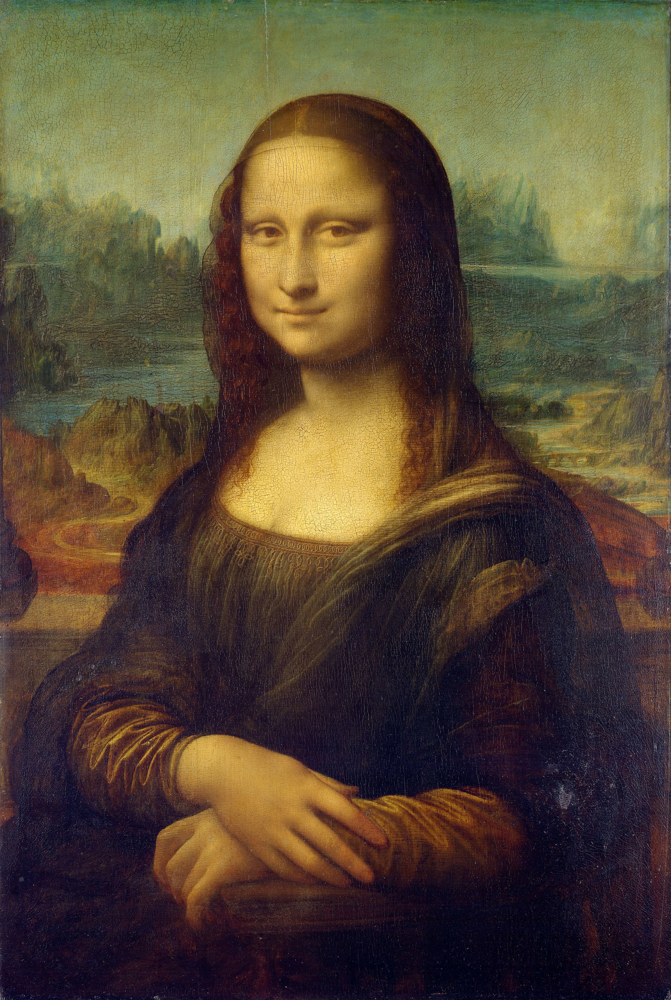
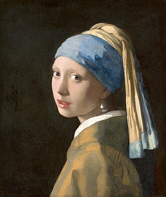
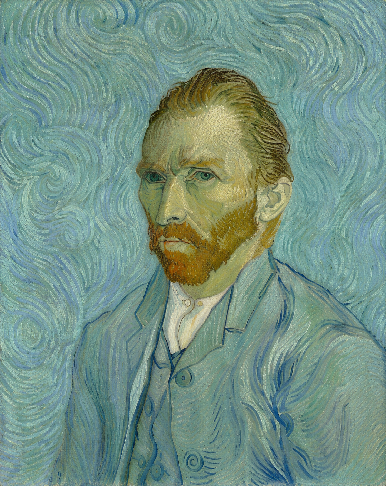
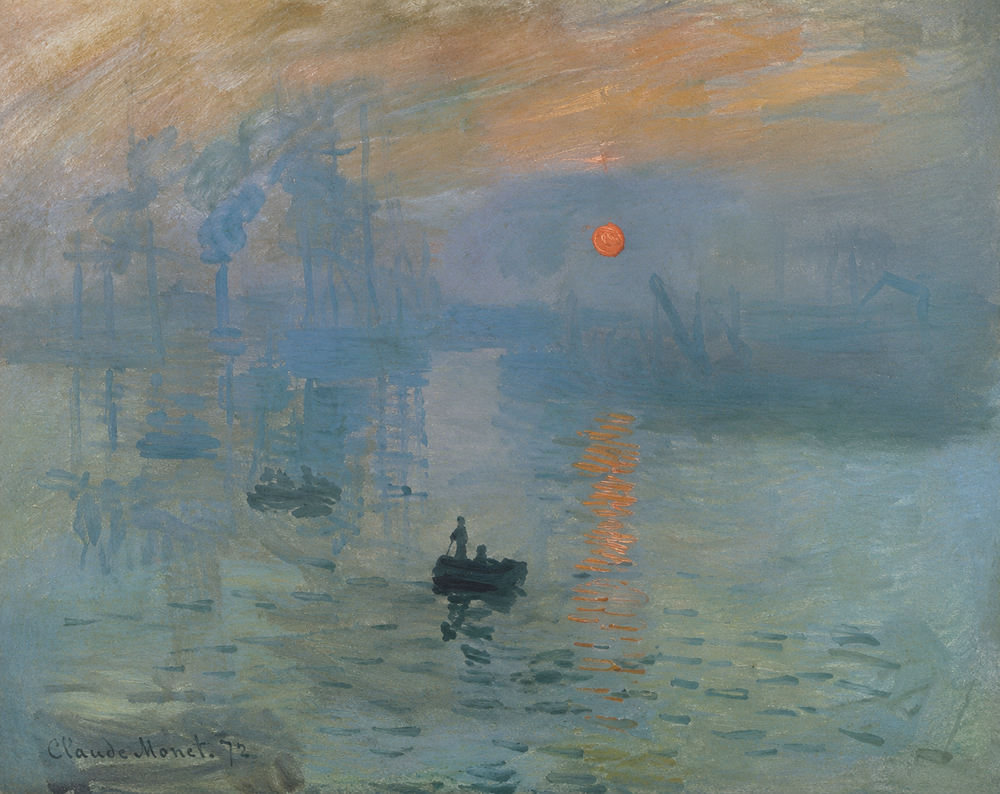
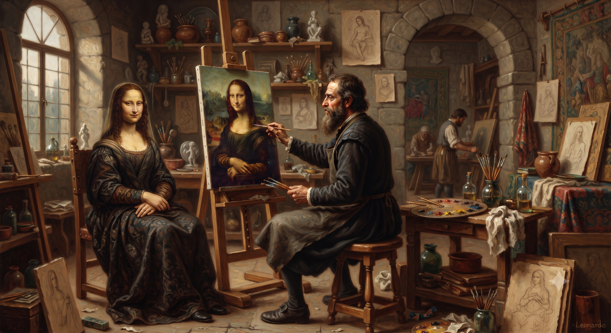

ARTDACI · Art beyond the frame
Masterpieces Alive.
From the printed page to living worlds. Discover masterpieces through art history, semantic knowledge, augmented reality, 3D, VR and spatial computing.
Print · Knowledge · Semantic · AR · 3D · VR · GEO
The ARTDACI Book · Print meets immersive culture
Explore ARTDACI
Eight ways to experience the collection.
Move from artworks and connected knowledge to interactive 3D, the Living Book, virtual galleries, immersive worlds, master-led experiences and cinema.
Painting Index
Search the collection and open the print, digital and immersive layers of each artwork.
02 Knowledge GraphARTDACI Semantic
Navigate artworks through artists, museums, places, themes, techniques and cultural links.
03 Interactive 3D3D Models
Inspect artworks, artists, ARTDACI objects and museum architecture as interactive 3D models.
04 Interactive BookLiving Book
Turn the pages of ARTDACI in 3D and launch media, models and immersive layers from the book itself.
05 Immersive GalleryVR Gallery
Enter virtual exhibitions, museum environments and artwork-centered spatial experiences.
06 Generative WorldsVirtual Worlds
Step into immersive worlds inspired by the Louvre, Leonardo's studio and Van Gogh's Bedroom.
07 MastersMasters Hub
Meet Leonardo, Vermeer, Van Gogh and Monet through guided 3D and narrative experiences.
08 CinemaVR Cinema
Watch art stories, animations and interpretive media inside a dedicated immersive cinema.
The Masters
Four artists. Four ways of seeing.
ARTDACI begins with four major figures whose works open distinct paths through portraiture, light, perception, emotion and the modern experience of painting.
From Page to Space
One artwork. Multiple dimensions of discovery.
ARTDACI connects the stability of the printed page with a growing spatial and semantic continuum. Readers can move deeper without losing the artwork as their point of reference.
Featured Masterpieces
Begin with an artwork.
Each masterpiece is more than a page: it can become a semantic node, an AR target, a 3D object, a narrated story or the entrance to an immersive environment.




Museums & Places
Art belongs to places, too.
ARTDACI connects paintings with the museums, rooms and geographic contexts that shape how they are encountered in the real world.
Virtual Museums
Enter galleries built around the collection.
Explore museum environments, dedicated rooms and cross-museum experiences in VR.
Visit the VR Gallery →ARTDACI GEO
Connect digital culture with real places.
Move from artworks to museum locations and spatial experiences designed around place.
Explore GEO →Collection
Painting Index
Search the ARTDACI collection, compare artworks, open print spreads and continue into available digital and immersive experiences.
The Spirit Behind ARTDACI
A tribute to Leonardo and the curiosity that connects disciplines.
ARTDACI is dedicated to Leonardo da Vinci—not as the inventor of today’s technologies, but as a visionary whose studies of art, optics, anatomy, machines, movement and space embody the curiosity that makes new forms of cultural discovery meaningful.
“What else can we discover?”

Continue from the Printed Book
Paper first. Digital when you want more.
Scan from the printed ARTDACI book to continue online, access multimedia layers and move from reading into connected and immersive experiences.